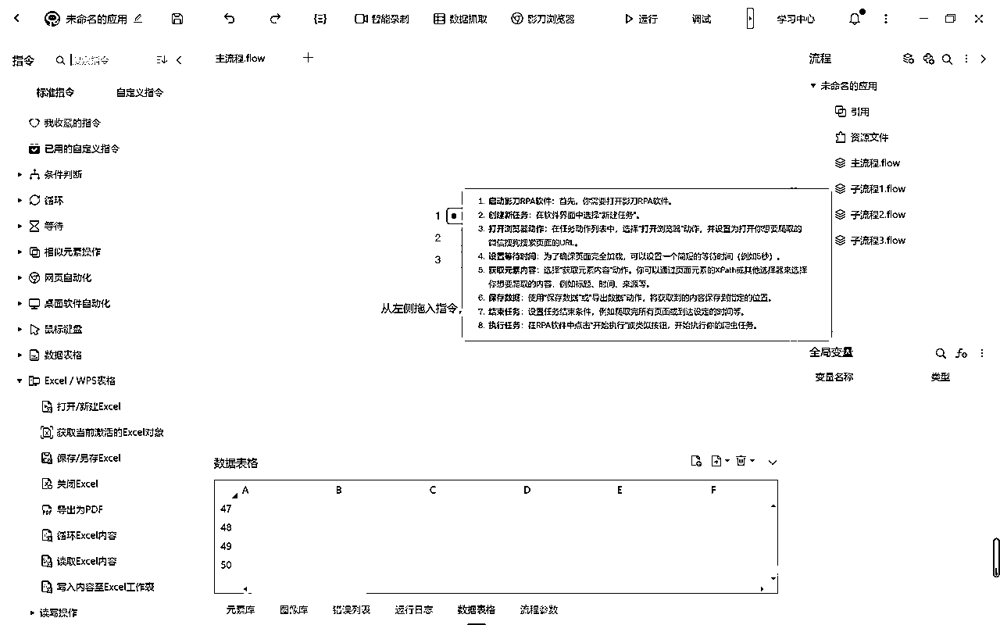

来源：https://bc8fd5oefm.feishu.cn/docx/S2IRdpmbtouaGMxrCIwcg1Rynzf
在上次发布第一弹之后https://t.zsxq.com/12k6dgddP
有幸得到了亦任大大的加精，同时应圈友的另一困惑，苹果设备安装python配置环境过于复杂，问能不能出一期不用python的爬虫
这就必须要提及到圈友们最常用的rpa了，只需要搭积木式的搭建好整个过程，不需要任何专业知识，就可以完成爬虫
我也是第一次使用影刀rpa，也是在探索中完成了该文章，如果有所启发，感谢圈友的点赞
同时为了让这个过程更加容易理解，我同步录制了一个视频并上传了bilibili
不过建议先看一遍文字教程（更加详细），然后再看视频版
bilibili视频链接如下：
https://b23.tv/QHCCCQH
声明：本案例最终可以实现爬取几乎大部分平台，如下案例只是作为参考，换了网站只需要更换提示词，但也仅作参考使用，请勿用于非法用途
第一步问gpt，提示词如下：
我是一个代码小白，完全零基础，也不会/想安装python等环境，但是我想使用爬虫爬取weixin.sogou.com的微信文章，我应该如何使用影刀rpa从https://weixin.sogou.com/weixin?ie=utf8&s_from=input&_sug_=y&_sug_type_=&type=2&query=aigc&w=01019900&sut=1028&sst0=1695214126073&lkt=1%2C1695214125965%2C1695214125965获取到标题，时间，来源等数据呢
得到操作步骤如下：
建议可以安装一个snipaste，可以直接把截图贴到屏幕上，这样我们可以看着步骤来
先注册，登录，进入主页面，创建新任务

一开始我就直接点击右上方的浏览器，后面发现没用之后，原来是在左边有一个添加指令
搜索打开，有个打开网页，直接拖到右边
然后让你设置参数，咋们把要爬取的链接放在这里，浏览器我就默认影刀浏览器了，因为其他浏览器好像有额外设置，大家根据自己需要
直接左边搜索等待，第一个拖过来，设置3s差不多就行，如果网页加载较慢，可以调整
我在左边没有搜索到，后来发现在上面有个数据抓取，不过他会打开默认的浏览器
我们先点击右边的运行，打开一个窗口，我们不关闭，直接切回来，再点击数据抓取默认窗口在右边，点击开始抓取，按住ctrl点击标题，发现它默认把内部元素都给选中了，真可谓意外之喜
点击完成，但是我们要爬肯定是爬取多页啊，勾选爬取多页，再，勾选其下方的去元素库选择，捕获新元素，翻到最下面，按住ctrl，点击下一页，他就会识别到下一页按钮，然后设置一下爬取页数，设置一下数据保存到哪儿，该获取数流程就完成了
记得拖动一下等待的位置，它默认弹了下去
我一开始直接搜索保存，找到保存excel，然后拖到右边，发现缺少了一个excel对象，我寻思默认来一个呗，结果没有，它报错（左边有一个小叉叉），我于是点击了右上方的使用说明，发现需要先启动ecel
搜索启动，有一个打开/新建excel，然后配置内容【新建excel，预览一个地址（我选择桌面），设置保存对象】

这个时候再把保存excel拖过去，他默认设置咋们之前设定的内容，勾选保存后关闭
最后一步，将数据写入表格，搜索写入，配置行号1，列名A，写入内容选择我们再批量数据抓取的部分保存的变量
这样整个流程就完成了
这一步发现，保存excel是多余的
去除最后一步，直接运行，拿到结果，在设置的excel文件中拿到了期待的结果